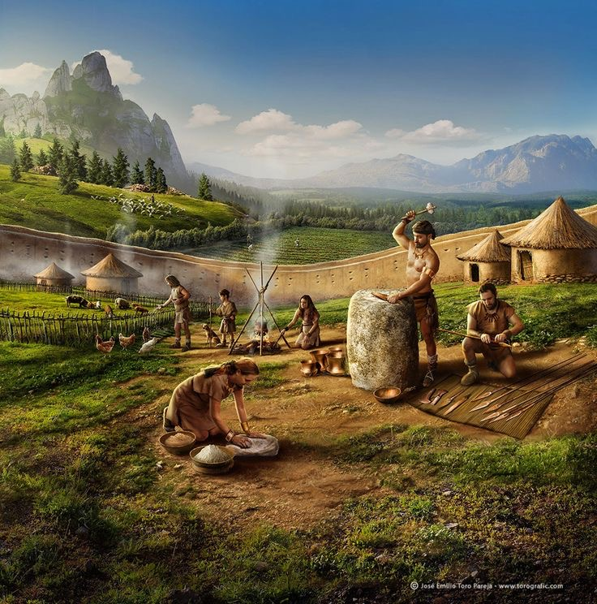
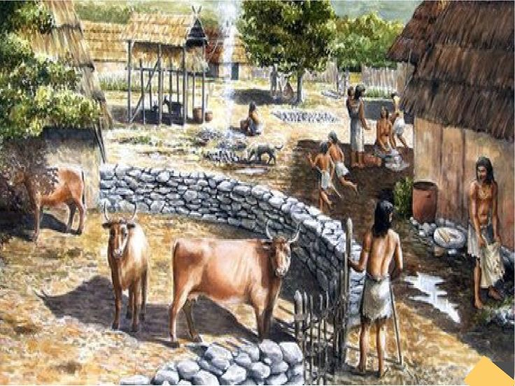
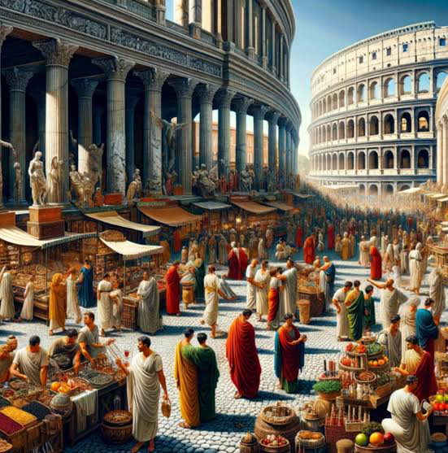
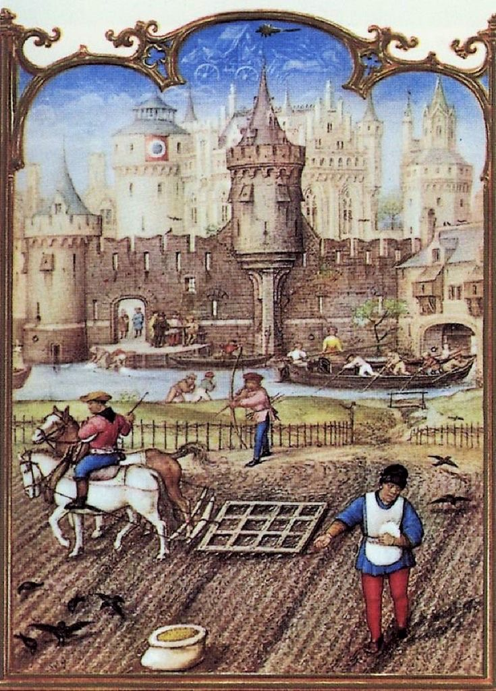
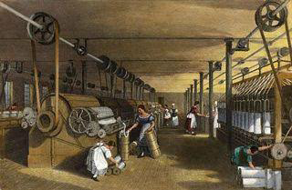
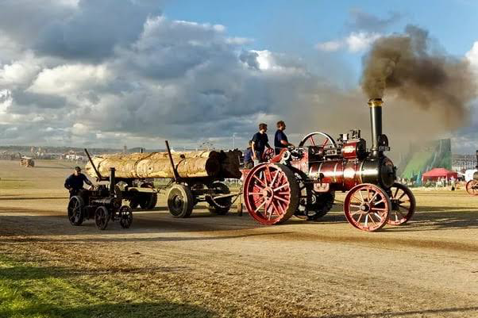
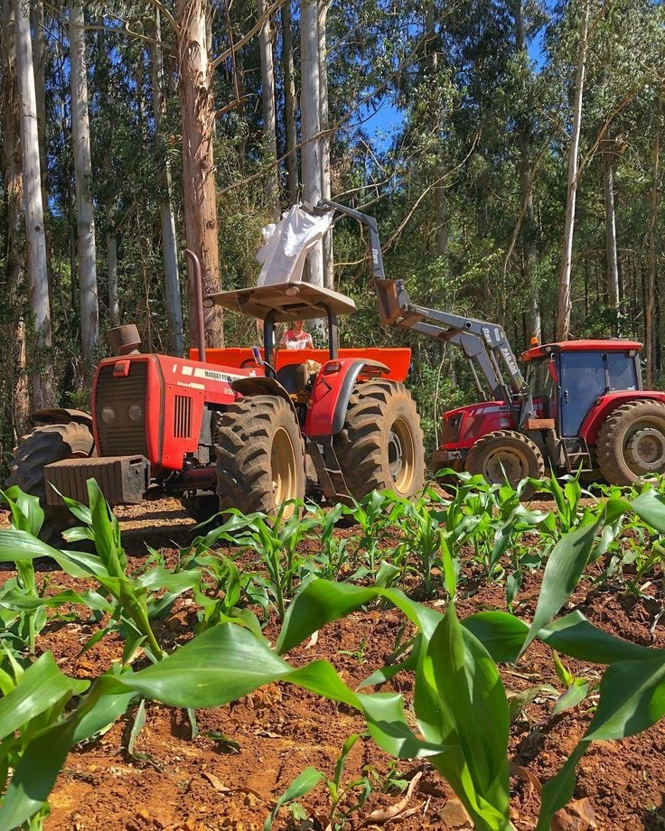
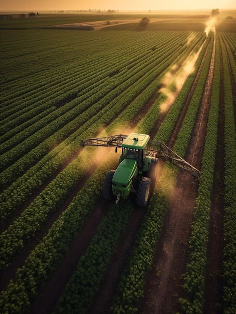

AGRO TIMELINE

Era Neolítica (c. 10.000 a.C. - 3.000 a.C.)

A revolução agrícola começou na Era Neolítica, por volta de 10.000 a.C., quando os humanos começaram a cultivar plantas e domesticar animais. As primeiras evidências de agricultura surgiram no Crescente Fértil, região que compreende partes do atual Iraque, Síria, Líbano, Israel, Palestina, Jordânia e Egito. O cultivo de cereais como trigo e cevada e a domesticação de animais como cabras, ovelhas e porcos marcaram essa época, levando ao surgimento de aldeias permanentes e ao desenvolvimento de novas tecnologias agrícolas, como a invenção do arado.
A Era Neolítica, que marcou uma transformação fundamental na história humana com a advento da agricultura. Esta revolução agrícola foi o ponto de virada que mudou sociedades nômades de caçadores-coletores para comunidades sedentárias e agrícolas. A agricultura na era Neolítica teve início no Crescente Fértil, uma região que abrange partes do atual Iraque, Síria, Líbano, Israel, Palestina, Jordânia e Egito. Este período é caracterizado pelo cultivo de cereais como trigo e cevada e pela domesticação de animais como cabras, ovelhas, porcos e gado.
O desenvolvimento da agricultura levou ao surgimento de aldeias permanentes, onde os humanos podiam controlar e aumentar sua produção de alimentos. A estabilidade alimentar proporcionada pela agricultura permitiu o crescimento da população e a formação de comunidades mais complexas. Ferramentas como arados primitivos, feitos de madeira ou pedra, facilitaram o cultivo de terras e a expansão das áreas cultivadas. A rotação de culturas e a prática do pousio eram técnicas utilizadas para manter a fertilidade do solo.
A domesticação de animais não só fornecia carne, leite e couro, mas também ajudava nas tarefas agrícolas, como arar a terra e transportar mercadorias. Este período também viu o desenvolvimento de tecnologias de armazenamento, como celeiros e silos, que permitiram aos agricultores guardar excedentes para épocas de escassez. Com a produção de excedentes, surgiu a especialização do trabalho e a troca de bens, promovendo o comércio entre diferentes comunidades.
Além dos avanços tecnológicos e sociais, a agricultura neolítica teve impactos profundos na estrutura social e cultural das comunidades. As propriedades de terra começaram a se tornar uma fonte de poder e riqueza, levando à formação de hierarquias sociais. A agricultura também influenciou a religião e a espiritualidade, com muitos cultos e rituais sendo centrados na fertilidade da terra e nas colheitas.
Em resumo, a Era Neolítica foi um período crucial de inovação agrícola que transformou a sociedade humana, estabelecendo as bases para o desenvolvimento das civilizações futuras.
Idade do Bronze e do Ferro (c. 3.000 a.C. - 500 a.C.)

Entre 3.000 a.C. e 500 a.C., a agricultura se expandiu e evoluiu significativamente. O uso de ferramentas de bronze e depois de ferro melhorou a eficiência do cultivo. Grandes civilizações, como as do Egito e Mesopotâmia, desenvolveram sistemas complexos de irrigação que permitiram a produção em larga escala. A domesticação de cavalos e bovinos para trabalho também se tornou comum, aumentando a produtividade agrícola e permitindo o transporte de produtos agrícolas.
O advento das ferramentas de bronze, e posteriormente de ferro, revolucionou a agricultura. Arados de ferro substituíram os de madeira, sendo muito mais duráveis e eficientes para revolver solos mais duros. Foices e enxadas feitas de metal permitiram uma colheita mais rápida e eficaz. Essa tecnologia facilitou o cultivo de terras antes impróprias para a agricultura, expandindo a área cultivável.
Os sistemas de irrigação se tornaram cada vez mais sofisticados, particularmente nas civilizações do Oriente Próximo. O Egito, com seu Nilo previsível, desenvolveu um método de irrigação baseado na inundação natural e canais artificiais que controlavam a água. Na Mesopotâmia, a construção de canais e diques para desviar a água dos rios Tigre e Eufrates tornou possível a agricultura em áreas que de outra forma seriam desérticas. Esses sistemas exigiram uma organização social complexa, com trabalho coordenado e uma administração centralizada para manter e operar as infraestruturas.
Além disso, a rotação de culturas começou a ser praticada, ajudando a manter a fertilidade do solo. Culturas como trigo, cevada, lentilhas e ervilhas eram comuns, sendo fundamentais para a alimentação das populações em crescimento. A introdução de novas técnicas de armazenamento, como silos de barro e celeiros subterrâneos, ajudou a proteger os grãos de pragas e intempéries, garantindo um abastecimento contínuo.
A domesticação de animais também teve um impacto significativo. Bois eram utilizados para puxar arados e carroças, enquanto cavalos se tornaram essenciais para o transporte rápido de mercadorias e pessoas. O uso de animais para trabalho agrícola aumentou drasticamente a quantidade de terra que podia ser cultivada e a velocidade com que isso era feito.
A organização social e econômica das comunidades agrícolas também mudou. O aumento da produtividade permitiu a formação de excedentes, que poderiam ser comercializados ou armazenados. Esse excedente levou ao surgimento de mercados e ao desenvolvimento do comércio, tanto local quanto de longa distância. Produtos agrícolas começaram a ser trocados por bens que não eram produzidos localmente, promovendo a especialização e a interdependência entre diferentes regiões.
Em resumo, a Idade do Bronze e do Ferro foi um período de grande avanço tecnológico e organizacional na agricultura. As inovações introduzidas durante esses milênios estabeleceram as bases para o desenvolvimento das sociedades complexas que floresceriam nos séculos seguintes.
A Antiguidade Clássica (c. 500 a.C. - 500 d.C.)

Durante a Antiguidade Clássica, a agricultura continuou a ser a base econômica das sociedades gregas e romanas. Métodos agrícolas mais avançados, como a rotação de culturas e o uso de adubos naturais, foram implementados. As vilas romanas, conhecidas como "villae", eram centros de produção agrícola que utilizavam mão de obra escrava. A expansão do Império Romano facilitou a troca de técnicas agrícolas e plantas cultivadas entre diferentes regiões.
Na Grécia, a agricultura era predominantemente de subsistência, com pequenos agricultores cultivando cereais, vinhas e oliveiras. As terras eram muitas vezes divididas em pequenos lotes, e a topografia montanhosa da Grécia limitava a extensão das áreas cultiváveis. No entanto, os gregos desenvolveram técnicas sofisticadas para maximizar a produção, incluindo a construção de terraços para evitar a erosão e otimizar o uso do solo.
Os gregos também foram pioneiros no cultivo de uvas para a produção de vinho e de oliveiras para azeite, ambos produtos que se tornaram fundamentais para a economia e a cultura grega. A rotação de culturas e o uso de esterco como fertilizante ajudaram a manter a fertilidade do solo, embora a agricultura grega ainda enfrentasse desafios significativos devido às condições ambientais adversas.
No Império Romano, a agricultura era altamente organizada e eficiente. As "villae" romanas funcionavam como grandes fazendas, produzindo uma variedade de produtos agrícolas destinados tanto ao consumo local quanto ao comércio. Essas propriedades eram geridas por proprietários que frequentemente utilizavam mão de obra escrava em grande escala. Os romanos adotaram e aprimoraram muitas técnicas agrícolas dos gregos e de outras culturas, incluindo a irrigação, a rotação de culturas e o uso de adubos.
Uma inovação significativa dos romanos foi o uso de máquinas agrícolas, como o arado pesado com uma lâmina de ferro, que podia arar solos mais duros e permitir uma agricultura mais eficiente em grande escala. Além disso, os romanos construíram extensas redes de estradas que facilitavam o transporte de produtos agrícolas entre as regiões do império, promovendo a integração econômica e cultural.
A expansão do Império Romano também trouxe a introdução de novas culturas agrícolas e técnicas de outras partes do mundo. O trigo do Egito, as especiarias da Ásia e as novas variedades de frutas e vegetais do Mediterrâneo Oriental foram incorporados à agricultura romana. Isso não apenas diversificou a dieta romana, mas também aumentou a produtividade e a resiliência agrícola.
Os mercados e feiras romanas se tornaram centros de comércio onde produtos agrícolas eram trocados, não apenas dentro do império, mas também com povos fora das fronteiras romanas. O comércio de grãos, vinho, azeite e outros produtos agrícolas era vital para a economia romana e sustentava as populações urbanas crescentes.
A agricultura durante a Antiguidade Clássica, portanto, foi marcada por avanços tecnológicos, inovações organizacionais e uma crescente integração econômica. As práticas desenvolvidas e aprimoradas pelos gregos e romanos estabeleceram uma base sólida para a agricultura na Europa e no Mediterrâneo, influenciando profundamente as sociedades posteriores.
Idade Média (c. 500 - 1500)

Na Idade Média, a agricultura na Europa foi marcada pelo sistema feudal, onde a terra era controlada por senhores feudais e trabalhada por servos. A introdução do sistema de três campos, onde uma parte do terreno era deixada em pousio, aumentou a produtividade. Novas culturas, como o arroz e o milho, começaram a ser cultivadas em algumas regiões. A partir do século XIII, a introdução de moinhos de vento e de água melhorou a moagem de grãos.
O sistema feudal dominou a estrutura agrícola da Idade Média, com a terra dividida em grandes propriedades controladas pelos senhores feudais. Os camponeses, ou servos, trabalhavam nessas terras em troca de proteção e uso de parte da terra para seu próprio sustento. Esse sistema era altamente hierárquico e limitava a mobilidade social, com as obrigações dos servos vinculadas à terra e ao senhor feudal.
A introdução do sistema de três campos foi uma inovação significativa na agricultura medieval. Este sistema envolvia a rotação de culturas em três áreas distintas: uma para cereais de inverno, outra para cereais de verão e a terceira deixada em pousio (sem cultivo) para recuperação do solo. Isso ajudava a manter a fertilidade do solo e aumentava a produtividade ao longo do tempo, comparado ao sistema de cultivo contínuo que esgotava o solo rapidamente.
Durante a Idade Média, houve também uma expansão no cultivo de novas culturas. O arroz, introduzido na Europa pelos árabes durante a expansão islâmica, começou a ser cultivado em áreas mais quentes e úmidas do sul da Europa. O milho, trazido das Américas após o descobrimento, foi gradualmente adotado como uma nova fonte de alimento em algumas regiões.
Os avanços na tecnologia agrícola também foram notáveis. Moinhos de vento e de água foram introduzidos para melhorar o processo de moagem de grãos, aumentando a eficiência e a capacidade de produção de farinha. Essas inovações não apenas melhoraram a qualidade de vida dos agricultores, mas também contribuíram para o crescimento econômico das comunidades rurais.
Também Durante a Idade Média, a agricultura não apenas sustentava a vida nas áreas rurais, mas também era fundamental para a economia feudal. Além das culturas principais como trigo, cevada e centeio, que eram essenciais para a subsistência, o desenvolvimento de vinhas e pomares também ganhou destaque. Vinho e frutas tornaram-se produtos comerciais importantes, sendo produzidos tanto para consumo local quanto para o comércio regional. Essas atividades agrícolas não só diversificaram a dieta das comunidades como também impulsionaram as trocas comerciais entre diferentes feudos e regiões.
A organização social da Idade Média influenciou profundamente a agricultura. A hierarquia feudal determinava não apenas a posse da terra, mas também as obrigações dos camponeses em relação aos senhores feudais. O trabalho coletivo nas terras senhoriais, conhecido como corveia, era uma obrigação central dos servos, que dedicavam grande parte de seu tempo ao cultivo das terras do senhor. Essa estrutura rígida limitava a mobilidade social, mas também garantia uma forma de sustento e proteção em uma época marcada por instabilidades políticas e sociais.
Em resumo, a agricultura durante a Idade Média foi caracterizada pela influência dominante do sistema feudal, pela introdução de práticas agrícolas inovadoras como o sistema de três campos, pela diversificação das culturas cultivadas e pelos avanços tecnológicos que melhoraram a produtividade e a eficiência agrícola. Esses desenvolvimentos desempenharam um papel crucial na evolução da sociedade europeia medieval.
Renascimento e Era Moderna (c. 1500 - 1800

O Renascimento trouxe uma renovação no interesse pelas ciências agrícolas, com melhorias nas práticas de cultivo e na criação de gado. A Era dos Descobrimentos facilitou a troca global de plantas e animais entre o Novo e o Velho Mundo, conhecida como a troca colombiana. Produtos como batatas, milho, tomate e tabaco foram introduzidos na Europa, enquanto o Velho Mundo trouxe trigo, gado e doenças para as Américas. No final deste período, a Revolução Agrícola Britânica introduziu novas práticas agrícolas, como o arado de ferro e a semeadura em linha.
A introdução de novas culturas e técnicas agrícolas teve um impacto profundo na produção e na dieta das populações europeias. A batata, por exemplo, tornou-se um alimento básico em muitas regiões da Europa devido ao seu rendimento elevado e valor nutritivo. O milho também se espalhou rapidamente e foi integrado em diversas cozinhas europeias.
Além disso, houve um avanço significativo no entendimento científico das plantas e dos solos. Agricultores e cientistas começaram a experimentar com a rotação de culturas, um sistema que envolvia o cultivo de diferentes plantas em uma sequência específica para manter a fertilidade do solo. Este método ajudava a prevenir o esgotamento dos nutrientes do solo, permitindo colheitas mais abundantes e sustentáveis.
Durante a Revolução Agrícola Britânica, várias inovações mecânicas e técnicas transformaram a agricultura. O arado de ferro, mais eficiente e durável que os anteriores de madeira, permitiu um preparo mais profundo e eficiente do solo. A semeadura em linha, desenvolvida por Jethro Tull, aumentou a eficiência e a produtividade ao garantir que as sementes fossem plantadas em intervalos regulares e a uma profundidade adequada.
Outro desenvolvimento crucial foi a criação seletiva de plantas e animais. Agricultores começaram a cruzar espécies de plantas para produzir variedades que fossem mais resistentes a pragas e doenças, e que tivessem rendimentos maiores. Similarmente, a criação seletiva de animais resultou em raças de gado mais produtivas, tanto em termos de carne quanto de leite.
A combinação dessas inovações levou a um aumento significativo na produção agrícola, que, por sua vez, contribuiu para o crescimento populacional e a urbanização durante a Era Moderna. As práticas agrícolas melhoradas também foram um fator chave para o surgimento da Revolução Industrial, fornecendo alimentos suficientes para sustentar uma força de trabalho crescente nas cidades.
Além das inovações técnicas e científicas, esse período também testemunhou mudanças significativas na estrutura social e econômica da agricultura. O surgimento das cercas (enclosure) na Inglaterra, por exemplo, transformou as terras comuns em propriedades privadas, permitindo uma gestão mais eficiente e produtiva das terras agrícolas. Esse processo de privatização levou a um aumento na produção, mas também causou deslocamento de muitos pequenos agricultores, que migraram para as cidades em busca de trabalho, alimentando a crescente urbanização. Além disso, a melhoria nas técnicas de irrigação e drenagem permitiu o cultivo de terras anteriormente inaptas, expandindo a área agrícola disponível. Juntas, essas mudanças não só aumentaram a produtividade agrícola, mas também alteraram profundamente a paisagem social e econômica da Europa, preparando o terreno para a era industrial.
Em suma, o período do Renascimento e da Era Moderna foi uma época de transformações significativas na agricultura, marcada por inovações tecnológicas, intercâmbio de culturas e avanços científicos que prepararam o terreno para a agricultura moderna e a sociedade industrial.
Revolução Industrial (c. 1800 - 1900)

A Revolução Industrial teve um impacto profundo na agricultura. A mecanização começou a substituir a mão de obra manual com a introdução de máquinas como o trator a vapor e a ceifeira-debulhadora. O desenvolvimento de fertilizantes químicos e pesticidas também melhorou a produtividade. A expansão das ferrovias permitiu a distribuição de produtos agrícolas em larga escala, conectando áreas rurais aos mercados urbanos.
A introdução dessas novas tecnologias agrícolas transformou radicalmente a maneira como os alimentos eram produzidos e distribuídos. Os tratores a vapor, mais tarde substituídos pelos tratores a gasolina e diesel, permitiram que grandes áreas de terra fossem cultivadas de forma mais rápida e eficiente do que nunca. A ceifeira-debulhadora, uma máquina que colhia e debulhava grãos simultaneamente, reduziu significativamente o tempo e o esforço necessários para a colheita.
Além das máquinas, a ciência agrícola avançou rapidamente durante a Revolução Industrial. O desenvolvimento de fertilizantes químicos, como o nitrato de amônio, permitiu que os agricultores enriquecessem seus solos de forma mais eficaz, aumentando os rendimentos das colheitas. Pesticidas químicos, como o sulfato de cobre, ajudaram a proteger as culturas de pragas e doenças, contribuindo para colheitas mais abundantes e seguras.
A expansão das ferrovias teve um impacto especialmente significativo. Antes das ferrovias, o transporte de produtos agrícolas era lento e caro, limitando a distribuição a áreas próximas das fazendas. Com as ferrovias, os produtos podiam ser transportados rapidamente para mercados distantes, permitindo que os agricultores vendessem seus produtos em uma escala muito maior. Isso não só aumentou os lucros dos agricultores, mas também melhorou o acesso dos consumidores urbanos a uma variedade maior de alimentos frescos e a preços mais baixos.
A revolução na agricultura também teve consequências sociais e econômicas importantes. A eficiência aumentada e a mecanização reduziram a necessidade de trabalho manual, o que levou muitos trabalhadores rurais a migrar para as cidades em busca de emprego nas indústrias emergentes. Essa migração rural-urbana contribuiu para o crescimento das cidades e para a transformação da estrutura social da época.
Além disso, a Revolução Industrial estimulou o desenvolvimento de novos sistemas de cultivo e melhoramento genético de plantas e animais. Instituições de pesquisa agrícola começaram a surgir, dedicadas a estudar e melhorar as práticas agrícolas. O desenvolvimento de novas variedades de plantas, mais resistentes e de maior rendimento, e a criação seletiva de animais para produção de carne e leite mais eficiente, tornaram-se comuns. Esses avanços não só aumentaram a produtividade, mas também ajudaram a criar uma agricultura mais resiliente e adaptável às mudanças climáticas e às pragas. Combinados, esses fatores contribuíram para a transformação da agricultura em uma indústria mais científica e industrializada, preparando o terreno para as práticas agrícolas modernas que conhecemos hoje.
A revolução na agricultura também teve consequências sociais e econômicas importantes. A eficiência aumentada e a mecanização reduziram a necessidade de trabalho manual, o que levou muitos trabalhadores rurais a migrar para as cidades em busca de emprego nas indústrias emergentes. Essa migração rural-urbana contribuiu para o crescimento das cidades e para a transformação da estrutura social da época.
Em resumo, a Revolução Industrial marcou um ponto de virada na agricultura, introduzindo inovações tecnológicas e científicas que aumentaram a produtividade e transformaram a distribuição de produtos agrícolas. Esses avanços não apenas melhoraram a eficiência agrícola, mas também tiveram um impacto duradouro na sociedade e na economia, pavimentando o caminho para a agricultura moderna.
Século XX (1900 - 2000)Século XX (1900 - 2000)

No século XX, a agricultura passou por mudanças revolucionárias. A Revolução Verde das décadas de 1940 a 1970 introduziu variedades de alta produtividade de trigo e arroz, bem como o uso intensivo de fertilizantes e irrigação. A mecanização agrícola avançou com tratores a diesel e colheitadeiras mais eficientes. A biotecnologia começou a ser aplicada na agricultura, resultando na produção de plantas geneticamente modificadas (GMOs). O desenvolvimento de técnicas de cultivo mais sustentáveis e a preocupação com a preservação ambiental ganharam destaque.
A Revolução Verde foi um marco na história agrícola, especialmente em países em desenvolvimento, onde a introdução de variedades de alto rendimento, combinada com práticas de manejo intensivo, levou a aumentos significativos na produção de alimentos. Isso ajudou a evitar a fome em várias regiões e a melhorar a segurança alimentar global. No entanto, o uso intensivo de fertilizantes e pesticidas também trouxe desafios ambientais, como a degradação do solo e a poluição das águas. Em resposta, surgiram movimentos para promover a agricultura sustentável, focando na rotação de culturas, no uso de compostagem e na redução de agroquímicos.
A partir dos anos 1980, a biotecnologia agrícola avançou rapidamente. A engenharia genética permitiu o desenvolvimento de plantas resistentes a pragas, doenças e condições ambientais adversas. As culturas GMOs, como soja, milho e algodão, tornaram-se comuns, aumentando a eficiência agrícola e reduzindo a necessidade de pesticidas. No entanto, o uso de GMOs gerou debates sobre segurança alimentar, ética e impactos ambientais, levando a regulações rigorosas e a uma maior conscientização pública sobre os alimentos geneticamente modificados.
Paralelamente, a agricultura de precisão começou a ganhar força, utilizando tecnologias como GPS, sensores e dados analíticos para otimizar o uso de recursos e aumentar a eficiência das operações agrícolas. Essa abordagem permitiu que os agricultores monitorassem e gerenciassem suas culturas com maior precisão, reduzindo desperdícios e melhorando a produtividade.
No final do século XX, a agricultura orgânica também cresceu em popularidade, refletindo uma crescente demanda por alimentos livres de químicos e produzidos de maneira sustentável. A certificação orgânica tornou-se uma prática comum, ajudando os consumidores a identificar produtos que atendem a padrões ambientais e de saúde rigorosos.
Com o avanço da tecnologia no final do século XX, a integração da informática na agricultura revolucionou ainda mais o setor. O uso de computadores e softwares especializados permitiu a coleta e análise de grandes volumes de dados agrícolas, facilitando a tomada de decisões informadas. Os sistemas de gestão agrícola, que utilizam dados meteorológicos, de solo e de colheita, ajudaram os agricultores a planejar e otimizar suas operações com maior precisão. Essa era de digitalização da agricultura, muitas vezes chamada de agricultura 4.0, incorporou drones para monitoramento de culturas, sistemas de irrigação automatizados e até robôs para a colheita, transformando a agricultura em uma indústria altamente tecnológica e eficiente.
Além disso, o final do século XX viu um aumento significativo na conscientização sobre as mudanças climáticas e seu impacto na agricultura. As práticas agrícolas tradicionais começaram a ser reavaliadas à luz dos novos desafios ambientais. A agricultura regenerativa emergiu como uma abordagem que busca restaurar a saúde do solo e dos ecossistemas agrícolas, promovendo práticas como a cobertura do solo, o plantio direto e a agroflorestação. Essas práticas não só ajudam a mitigar as mudanças climáticas, sequestrando carbono no solo, mas também aumentam a resiliência das culturas contra eventos climáticos extremos. A colaboração internacional e o investimento em pesquisa e desenvolvimento agrícola se intensificaram, com organizações globais trabalhando juntas para promover práticas sustentáveis e inovadoras que garantam a segurança alimentar no futuro.
Em resumo, o século XX foi um período de transformações profundas na agricultura, caracterizado por inovações tecnológicas, avanços científicos e um crescente foco na sustentabilidade. Essas mudanças não só aumentaram a produção e a eficiência, mas também destacaram a necessidade de equilibrar a produtividade com a preservação ambiental e a saúde pública.
Século XXI (2000 - presente)

No século XXI, a agricultura continua a evoluir rapidamente. A tecnologia digital está transformando a agricultura com o uso de drones, sensores e big data para monitorar e otimizar a produção. A agricultura de precisão permite o uso eficiente de recursos como água e fertilizantes. A biotecnologia avança com a edição de genes, como o CRISPR, permitindo o desenvolvimento de culturas mais resistentes e nutritivas. A sustentabilidade e a agricultura regenerativa estão se tornando prioridades, com práticas que visam reduzir o impacto ambiental e restaurar a saúde dos solos. A urbanização e o aumento da população mundial continuam a pressionar a necessidade de inovação e eficiência na produção de alimentos. Essas eras representam uma visão geral da evolução da agricultura ao longo da história, destacando os principais eventos e inovações que moldaram a produção de alimentos até os dias de hoje.
Essas eras representam uma visão geral da evolução da agricultura ao longo da história, destacando os principais eventos e inovações que moldaram a produção de alimentos até os dias de hoje.
O uso de drones na agricultura moderna tem permitido um monitoramento mais detalhado e em tempo real das condições das culturas. Esses drones podem capturar imagens de alta resolução que ajudam a identificar problemas como pragas, doenças e estresse hídrico em estágios iniciais. Isso permite que os agricultores intervenham de forma precisa e oportuna, minimizando perdas e otimizando a produção. Além disso, os drones podem ser equipados com sensores para medir a saúde das plantas e a composição do solo, proporcionando dados valiosos para decisões agrícolas informadas.
A biotecnologia é outra área em crescimento, com o desenvolvimento de variedades de plantas geneticamente modificadas para resistir a condições adversas, como seca, salinidade e temperaturas extremas. Além disso, a edição de genes como o CRISPR possibilita a criação de culturas com melhor valor nutricional, maior rendimento e resistência a pragas e doenças. Esses avanços são essenciais para garantir a segurança alimentar em um mundo com população crescente e mudanças climáticas.
A sustentabilidade na agricultura é uma preocupação crescente. Práticas agrícolas sustentáveis incluem a rotação de culturas, o plantio direto e o uso de culturas de cobertura para manter a saúde do solo e reduzir a erosão. A agricultura regenerativa vai além, buscando não apenas sustentar, mas melhorar o ecossistema agrícola. Isso inclui a restauração da biodiversidade, a sequestro de carbono no solo e a criação de sistemas agrícolas mais resilientes e diversificados.
A urbanização crescente impõe desafios significativos à agricultura. A redução de terras aráveis e a necessidade de produzir mais alimentos em áreas menores exigem inovação constante. A agricultura vertical e as fazendas urbanas estão emergindo como soluções para cultivar alimentos próximos aos centros urbanos, reduzindo o transporte e as emissões associadas. Essas práticas também permitem o cultivo durante todo o ano, independentemente das condições climáticas externas.
A pressão por uma produção de alimentos mais eficiente também está estimulando o desenvolvimento de novas tecnologias, como a robótica e a inteligência artificial. Máquinas autônomas podem plantar, cuidar e colher culturas com precisão e eficiência, reduzindo a necessidade de mão-de-obra intensiva e aumentando a produtividade. Algoritmos de inteligência artificial ajudam a prever safras e gerir recursos de forma mais eficaz, trazendo uma nova era de automação agrícola.
Finalmente, a cooperação internacional e a troca de conhecimentos são cruciais para enfrentar os desafios globais da agricultura. A colaboração entre governos, instituições de pesquisa e setor privado está promovendo a disseminação de tecnologias inovadoras e práticas sustentáveis. A educação e o treinamento de agricultores em novas técnicas e tecnologias são essenciais para garantir que esses avanços sejam amplamente adotados e que a produção de alimentos continue a evoluir de forma sustentável no século XXI.